|
Productions include Dominique Fishback’s “Subverted”; “Taproot: Short Poetic Plays” featuring new work by Dominique Morisseau, José Rivera, Craig muMs Grant and others; Keomi Tarver’s “Love & War: The Battle of the Heart”; Joanna Hoffman’s “The Personal is Political: These Simple Truths” with Abena Koomson’s “Cozi Sa Wala: Redux”; SPKRBOX’s Norway and US collaboration “Do Not Shine”; Safiya Martinez’s “So You Can Hear Me”; Sofía Snow’s “for women who stay, for men who leave”; Truthworker Theatre Company’s “IN|PRISM: Boxed In & Blacked Out in America”; "The Refuge Project" devised by an ensemble of poetic theater artists led by Alex Mallory.
Special Events include “Climbing Poetree ft. Truthworker Theatre Company”; “Kicking Down Doors: Veterans & Their Families in America”; the 4th annual “Breaking Our Silence Showcase” a celebration of LGBTQ voices; Kid Lucky’s “Nu Voices”; Soul Requirements’ “Relate-ta-tive Landscapes: Black Womyn Magick”; Shawn Randall’s “Symphonics Live: The Fool For Love And Poetry Edition”; Bedlam’s Veteran Outreach Open Class: Macbeth; 4th annual “Generation Now” youth poetic theater showcase featuring Girl Be Heard, viBe Theater Experience, EarSay Youth Voices and Urban Word NYC; Poetic Theater Productions and Musical Theatre Factory’s “Poetic Lyricism”.
Staged Readings include Eboni Hogan’s “30,000 Teeth”; Mahogany L. Browne’s “SMUDGE”; La Lucha Arts Presents Raquel Almazan’s “La Paloma Prisoner”; Keelay Gipson’s "What I Tell You in the Dark".
This year’s festival is curated by Mahogany L. Browne, Darian Dauchan, Craig muMs Grant, Jenny Pacanowski, Danielle Puretz and Jeremy Karafin.
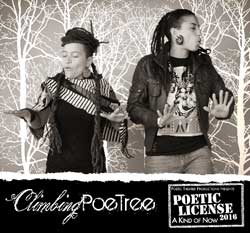March 17th 7pm, $18
Climbing PoeTree ft. Truthworker Theatre Company
Artistic Directors: Alixa Garcia, Naima Penniman, Samara Gaev
Featuring: Alixa Garcia, Naima Penniman, and the Truthworker Theatre Company: Danajha Davis, Cory Fletcher, James Gagliardo, Ricky Matos, Enlil McRae, Leah Mohammed, Zafar Mohammed, Rebecca Oliver, Desi Ramos, Ethan Romero, Carnell Steward
Technical Direction by: Alixa Garcia
Climbing PoeTree's acclaimed performance is composed of dual-voice spoken-word, and award winning multimedia theater that explores diverse themes, including: healing from state and personal violence, environmental justice, civil rights, spirituality, global politics, and woman's empowerment. In this rare opportunity, they will be collaborating with Truthworker Theatre Company, whose work interrogates the prison industrial complex, interweaving dynamic multimedia performance to create a poignant conversation between the two groups. Climbing PoeTree will be sharing excerpts from their upcoming album, a collaboration with over 20 musicians, as well as pieces from their award winning production Hurricane Season, astutely braided with vignettes from Truthworker's hip-hop theater production Bar Code: A Performative Analysis of the School-to Prison Pipeline. This performance centralizes visions of hope amidst the ongoing unnatural disasters.
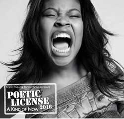March 18th 7pm, 9pm, $18
Subverted
written by and featuring Dominique Fishback
directed by Chad Chenail
Choreography by Daigi-Ann Thompson
SUBVERTED portrays the destruction of Black identity as seen through the eyes of Eden, an 18 year-old girl living in any urban city in the USA. Through the colliding viewpoints of 18 friends, family members, and historical figures (all portrayed by actor, writer, and spoken word poet Dominique Fishback) Eden discovers that the promise of "equal opportunity" still, to this day, does not exist. She questions why the people she loves the most continue to live blindly subverted by an unrelenting history that they did not live through, yet inherit and must accept. Eden's journey will make a difference in our understanding of what true equality actually looks like.
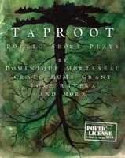March 19th, 26th, & April 2nd, 9th at 7pm, $18
Taproot: Poetic Short Plays
New short poetic plays by Dominique Morisseau, José Rivera, Craig muMs Grant and others.
Short poetic plays will include “Jezelle the Gazelle” by Dominique Morisseau, “The Garden of Tears and Kisses” by José Rivera, “Everything is Everything” by Craig muMs Grant and more.
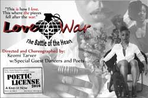March 19th, 26th, & April 2nd at 9pm, $20
Love & War: The Battle of the Heart
directed and choreographed by Keomi Tarver
with poetry by Keomi Tarver, Jeanann Verlee, True, Kat Magill, and Ant Black.
Featuring Keomi Tarver, Autumn Oftedal, Sharifa Linton, Candace Tabbs, Gabriella Bruno, Jerijah West, Jeanann Verlee and True
Mixing dance and poetry, Love & War creates a space for the complexities of being a woman of color. Using movement, poetry and music, Keomi welcomes the vulnerability love and war brings to the surface. She boldly shares her moments of shame, and her experiences while learning to live in her body and being with all the magic, anguish, and divinity within her. She chooses to find the worthy in all of her, finding the beauty of being broken and how it lets light, not only in, but out. Showing how opposing extremes can occupy the same space, finding the grace and love in the midst of the war. Leaning on and supporting women while creating abundance and celebration in womanhood along the way, every city will feature local artists, creating relevance and representation. Love & War asks all the hard questions we keep tucked away due to fear, leaving us exposed and, eventually, free.
March 23rd 7pm, $18
The Personal is Political: These Simple Truths & Cozi Sa Wala: Redux
Joanna Hoffman’s The Personal is Political is presented with an excerpt of Abena Koomson’s Cozi Sa Wala: Redux
The Personal is Political: These Simple Truths
written by and featuring Joanna Hoffman
directed by Sherri Eden Barber
“The Personal is Political: These Simple Truths" explores how current events surrounding issues such as gay marriage, bullying and xenophobia are actually rooted in very personal, lived experiences. Through spoken word poetry reflecting on these issues, Joanna hopes to inspire others to base political beliefs on compassion and empathy.
Cozi Sa Wala: Redux
written by and featuring Abena Koomson
directed by Keith Oncale
Cozi Sa Wala: Redux is a one-person show that unites the two worlds of an American-born Ghanaian woman by intersecting the Fanti stories of her father with the commentary of a community of Ghanaians attending a funeral party. This version of the “solo” show will bring the voices of the piece into an interactive conversation through video, audio looping, and photography.
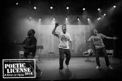March 23rd, 24th, & 25th, at 9pm, $18
Do Not Shine
American Premiere*
featuring poetry and music written and performed by Craig ”muMs” Grant (Bronx), Taro Vestøl Cooper (Norway) and Beatur (Iceland)
Playwright is Kristofer Grønskag (Norway)
Directed by Jon Tombre (Norway)
Video Design & Lighting Design by David J. Palmer (US)
Presented by SPKRBOX Festival and the Norwegian Center for New Playwriting
This collaborative international hip-hop theater production was developed in workshops both in Norway and New York. “Do Not Shine” explores “Janteloven”, a common unwritten code in Scandinavian countries that deemphasizes individual success as generally unworthy and focuses on group accomplishments instead. Electronic music scored with beatboxing on a loop machine played by Beatur, current Icelandic champion in beatboxing, Janteloven is explored in the show through Taro Vestøl Cooper’s Norwegian upbringing and the impact of knowing he is the son of American legendary jazz musician Johnny Griffin, Beatur’s immigration to Norway from Iceland juxtaposed with Craig muMs Grant’s upbringing within early hip-hop culture in the Bronx.
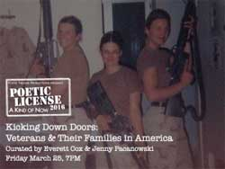March 25th at 7pm, $15
Kicking Down Doors: Veterans & Their Families in America
Veterans Jenny Pacanowski and Everett Cox curate an evening of poetry, theater and music written by and featuring veterans and their families.
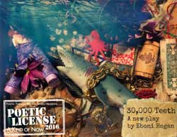March 28th at 7pm, $15
30,000 Teeth - Staged Reading
written by Eboni Hogan
featuring Toni Ann De Noble, Temesgen Tocruray and Eboni Hogan
Still grieving her own recent loss, hardheaded attorney, Sienna is recruited to challenge the court that sentenced 17 year old Katrice Willets to life in prison for murder. As Katrice's fiery will tests Sienna's restraint, they discover that although they occupy vastly different worlds, they are bound by a communal inheritance of black girl grief. "30,000 Teeth" is a sharply written account of what it means to be, at once, invisible and spectacle; to beguile and to bite back.
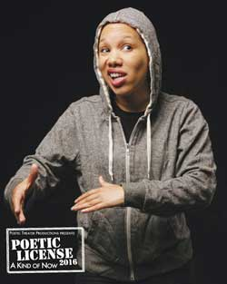March 28th at 9pm, $18
So You Can Hear Me
written by and featuring Safiya Martinez
So You Can Hear Me is a love letter to the youth culture that emerges from New York City. Its language speaks with urgency, swagger, and vulnerability. The work is an exploration of the universal human desire for love. Through interconnected narratives, each character voices an essential desire to be seen and heard, clearly.
“At the top of the play, I focus on the transformation of the grittier reality of New York from my childhood during the 1980s to the multitude of issues that arise with present-day gentrification. The current climate within the school system reflects these issues in complex and painful ways. Through this work I explore how safety, aggression, and resistance are negotiated within the space of a school and how the larger economic and political climate of the city informs the lives of students and teachers.” -Safiya Martinez
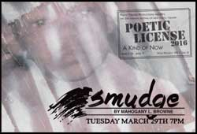March 29th at 7pm, $15
SMUDGE - Staged Choreopoem Reading
written by Mahogany L. Browne
Based on the poetry from Mahogany’s most recent book of the same name, SMUDGE is a staged choreopoem offering a powerful, intimate, and complex portrait of a girl who deserves more than what she is given: a world in which our hero is both painfully invisible and vulnerably exposed. Mahogany L. Browne was nominated for the 2015 NAACP Image award for Outstanding Literary Work in Poetry and is a Cave Canem and Poets House alumnae and a Serenbe Focus Fellow. Her poetic play REDBONE: A Biomythography premiered in Poetic License 2014.
March 29th at 9pm, $18
for men who leave, for women who stay
written by and featuring Sofía Snow
directed by Rafael Casal
Sofía Snow, is a First Wave Scholar and member of the First Wave Hip Hop Theatre Ensemble. In 2011, she was honored as one of the “Top 15 Inspiring Young Female Activists” by Generation Progress. Sofía has taken her passions (youth work, arts, and social justice) across the US, UK and Caribbean – performing and using Hip Hop to make change. In 2013, the City of Boston officially resolved February 28th as Sofía Snow Day; Snow was acknowledged as Cosmopolitan Magazine's Fun Fearless Female for April 2013; and Muzzle Magazine listed her as top 30 writers under 30. Sofía is the co-founder of the Not Enough Mics Collaborative, a nationwide network of womyn artists. She is currently working for the Office of Multicultural Arts Initiatives as the Education & Outreach Coordinator for First Wave.
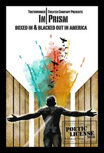March 30th at 7pm, $18
IN|PRISM: Boxed In & Blacked Out in America
Presented by Truthworker Theatre Company
directed by Samara Gaev
technical direction by Alixa Garcia
featuring Danajha Davis, Johari Farrar, Cory Fletcher, James Gagliardo, Ricky Matos, Enlil McRae, Leah Mohammed, Zafar Mohammed, Rebecca Oliver, Desi Ramos, Ethan Romero, Carnell Steward
IN|PRISM: Boxed In & Blacked Out in America, an original hip-hop theatre production Directed by Samara Gaev, examines the impacts & practices of solitary confinement in US prisons, tracing one man’s remarkable capacity for liberation within the walls of death row. We have the unique and humbling opportunity to be working directly with Jarvis Jay Masters, an innocent man on death row, who has been incarcerated since the age of 19 in San Quentin Prison & institutionalized since he was a young boy.
March 31st at 7pm, $18
Breaking Our Silence: Showcase
written by and featuring Sentell Harper, Joanna Hoffman, Sam Laroche and Charan P. Morris
The 4th Annual Breaking Our Silence is a celebration of LGBTQ voices sharing their experiences of coming out, finding love, breaking the silence and speaking out.
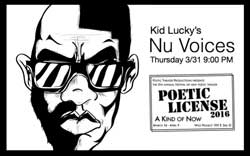March 31st at 9pm, $18
Nu Voices
Nu Voices is a vocal concept created by Kid Lucky. It is the first human beatbox dominated orchestra in the world. The entire performance is entirely improvised. Conceived in 2002, Nu Voices took off in 2006 debuting at Nuyorican Poets Café and has played throughout NYC, France, Germany and Prague.
Kid Lucky was inspired by the conducting method of conductor Butch Morris. Kid Lucky is a hip hop vocalist who specializes in beatboxing, floetry and scatting. Since 1996, he has been considered one of the most cutting edge hip hop vocalists in the world. He moved to Prague for two years and there he developed a vocal style he calls BEATRHYMING - beatboxing and rhyme flow at the same time. Kid Lucky's musical style blends hip hop, floetry, jazz and folk music.
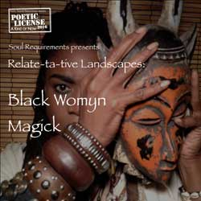April 1st at 7pm, $18
Relate-ta-tive Landscapes: Black Womyn Magick
Presented by Soul Requirements
featuring:
community collaborators vocalist Stef Walker and dancer Mshairi A Uwezo Siyanda and selections from "From Ashes To Angel’s Dust: A Journey Through Womanhood"
written by Zoë Flowers
co-written and co-produced by Sherri Pullum
directed by Ebony Noelle Golden
featuring Chantal Maurice, Sherri Pullum, Vesta Walker and Zoë Flowers
stage management by Camila Camilo
Relate-ta-tive Landscapes: Black Womyn Magick is a performance art showcase of inspiration liberation & celebration of Black Womyn Magick. Looking at the landscape of racism, sexism, sexuality, media, gender and women of color, Relate-ta-tive Landscapes asks the questions: How are we relating or not to self, others, community and the environment within this landscape? How do we love ourselves? How do we love each other?
This special event features excerpts of “From Ashes to Angel's Dust: A Journey Through Womanhood, a ChoreoDrama that uses monologues; poetry and vignettes to breathe life into the original stories shared in Zoë's book Dirty Laundry and includes new stories about racism, same sex violence, body image and the journey to self-love. Dirty Laundry: Women of Color Speak up about Dating & Domestic Violence emerged from interviews Zoë conducted with survivors of domestic and sexual violence.
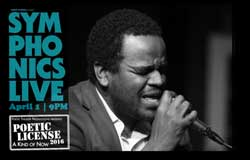April 1st at 9pm, $18
Symphonics Live: The Fool For Love And Poetry Edition
Featuring: Duv, Tricia Alexandro, Jenson Smith, Shawn Randall & more
Executive Producer: Shawn Randall
Associate Producer: Alexandra Renzo
Symphonics Live is the multidisciplinary evening produced and hosted by Shawn "Mr. Symphonics Live" Randall showcasing several of the finest poets and singer/songwriters in NY. Along with elements of dance and improvisation, Symphonics Live promotes generosity, love, and creativity through the continual exploration of humanity through performing and visual arts. Symphonics Live has performed for crowds of people at the the legendary Blue Note Jazz Club, Highline Ballroom, Joe's Pub, Zipper Factory Theater, and is currently in residence on the 3rd Sundays of the month at the Bowery Poetry Club in New York.
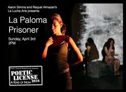April 3rd at 2pm, $15
La Paloma Prisoner - Staged Reading
written by Raquel Almazan
directed by Mei Ann Teo
produced by Aaron Simms and Raquel Almazan’s La Lucha Arts with Tiffany Vega
La Paloma Prisoner (the staged reading series) combines women who have experienced the criminal justice system alongside performers to engage with audiences with the themes of mass incarceration. Panel discussion on Stopping Mass Incarceration to follow directly after the reading.
Funded by the Arthur J. Harris Social Justice Art Grant in association with Columbia University.
La Paloma Prisoner is a multidisciplinary play about the reclamation of identity by incarcerated women in the Colombian prison system. This new play centers on an incarcerated killer nicknamed “La Paloma” who transcendentally soars beyond physical and societal barriers to avenge the raped women of Bogota, leading the public to believe La Paloma may have magical avenger abilities. Based on the true story of a group of female inmates selected every year as beauty queen contestants at the Buen Pastor prison in Bogota, this new play interweaves the ritualistic journey of a “parade of prisoners” with Colombia’s social, political, and spiritual history. Claiming of this newfound power, the women redefine beauty, their own humanity, and their identity as criminals. La Paloma Prisoner revolutionizes not only the women’s lives, but prison society and the world beyond its walls.
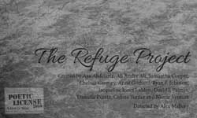April 3rd, 7th, & 8th at 7pm, April 6th at 9pm, $18
The Refuge Project
directed by Alex Mallory
created by Aya Abdelaziz, Ali Andre Ali, Samantha Cooper, Chelsea Greory, Anna Gothard, Ryan F Johnson, Jacqueline Jones LaMon, David Jonathan Palmer, Danielle Puretz, Colista Turner and Nicole Ventura
The Refuge Project investigates the personal side of the frequently politicized action of seeking refuge. Devised by an ensemble of artists across artistic disciplines, the work will look at personal narratives from today and throughout history as a jumping off point for a deeper discussion about refuge from violence, grief, and other emotional and psychological traumas.
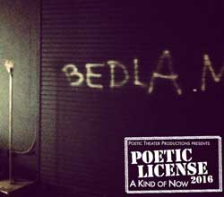April 4th, Free Admission
Bedlam Outreach “Open House” - A Sneak Peek Into Bedlam Outreach’s Monday Night Classes for Military Veterans: Macbeth
5:30-6:00pm a very informal “meet and greet” between Veterans, Bedlam Company Members and YOU.
6:00-9:00pm sharing of Macbeth from a Veterans’ Perspective
The public is invited to join veterans participating in Bedlam’s outreach Shakespeare program as they present Shakespeare inspired works in development.
Bedlam believes in the power of theater as medicine. Whether to connect with other Veterans after a tough day, or the life-long process of reintegrating back into civilian life, or the recovery process from issues such as post-traumatic stress, the performing arts have been a powerful tool to Veterans for our ancient ancestors and today.
The Veterans/Actors of Bedlam’s Veteran Outreach Class, Bedlam’s Director of Veteran Outreach, Stephan Wolfert and Bedlam’s Artistic Director, Eric Tucker create an informal opportunity to meet the Veterans/Actors of the Outreach class and to share in their work with Stephan which includes work on monologues, scenes and offerings from their own personal writings. Our “Open Houses” are an opportunity for Veterans and civilians to exchange in an open dialogue toward bringing a deeper understanding between these two communities.
The outreach program is led by Stephan Wolfert, Actor/Writer/Director, MFA, (US Army, ’86-’93, Medic & Infantry Officer). Stephan left a career in the military for a life in the theatre after seeing Shakespeare’s Richard III.
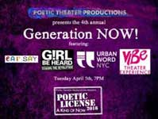April 5th at 7pm, $18, $10 for Students
Generation Now!
Poetic Theater Productions’ 4th Annual Generation Now! event features youth created poetic theater. This year’s Generation Now will feature Girl Be Heard, viBe Theater Experience, EarSay Youth Voices and Urban Word NYC.
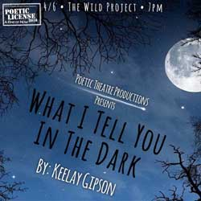April 6th at 7pm, $15
What I Tell You in the Dark - Staged Reading
Written by: Keelay Gipson
Told in two parts, What I Tell You in the Dark is an exploration of how much one is willing to share and the consequences, unforeseen, that public self-discovery may have in the long run. In part one, told as a folktale, a pre-adolescent city boy is shipped off to his Southern relatives for the summer. He gets schooled in the way of "growing up Southern" by his Auntie, his Aunt and his cousin. While there, he learns more about himself than he bargained for and his family, mainly his cousin, leave an indelible mark on him that he takes with him into adulthood. In part two, our protagonist returns to his Auntie's house after the success of a book based on his experience during his first summer. The unexpected passing of his Aunt causes him to confront the memories that have become the basis of his success and the people he included in his retelling of his past.
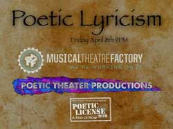April 8th at 9pm, $18
Poetic Lyricism
Artists from Poetic Theater Productions and The Musical Theatre Factory communities team up to present an evening of new collaborative poetic musical theatre.
Project Directors: Andrew Willis-Woodward & Lynn Spector.
|